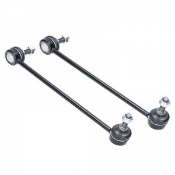
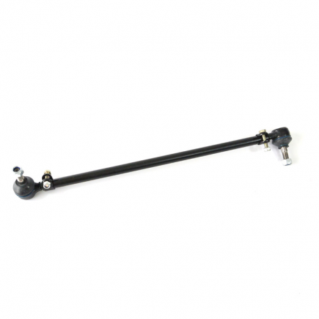

| Imagen |
Descripción / Modelo |
Precio |
 |
Amortiguador Dirección Boge compatible con la marca chevrolet, dodge, nissan y jeeep posision delantera
piezas disponibles 12 garantia de 1 año 6 meses
|
$990.00.- |
 |
Duralast Bomba de Direccion Hidraulica, Cada unidad se prueba e inspecciona para asegurar que
cumple o excede las especificaciones del equipo original. color plateado, piezas disponibles 15
garantia de 1 año en tienda
|
$ 1,200.00.- |
|  |
marca duralast bieleta de teminal de direccion peso de 1 kg garantia de 1 año
en tienda piezas disponibles 37 color negro |
$ 700.00.- |
 |
duralast brazo auxiliar, color negro, peso de 5 kg, garantia de 1 año en tienda
piezas disponibles 478, marca duralast
|
$ 950.00.- |
 |
Caja de Direccion Hidraulica, marca duralast, peso de 13 kilos, color negro.,
Los baleros, bujes, válvulas, barras de acoplamiento y otros componentes
son 100% inspeccionados utilizando equipo de medición calibrado y luego refabricado o reemplazado con nuevos.
garantia de 1 año piezas disponibles 15
|
$ 4,000.00.- |
 |
Deposito de direccion hidraulica, color blanco, material plastico, peso de medio kilo,
marca dorman, piezas disponibles 98, El depósito de la dirección hidráulica Dorman utiliza
plástico premium para resistir los efectos de la tensión generada por el compartimiento del motor
|
$ 1,500.00.- |
|  |
varilla de direccion derecha, material acero, color negro, para vw sedan
garantia de 1 año en tienda piezas disponibles 15
|
$ 1,500.00.- |